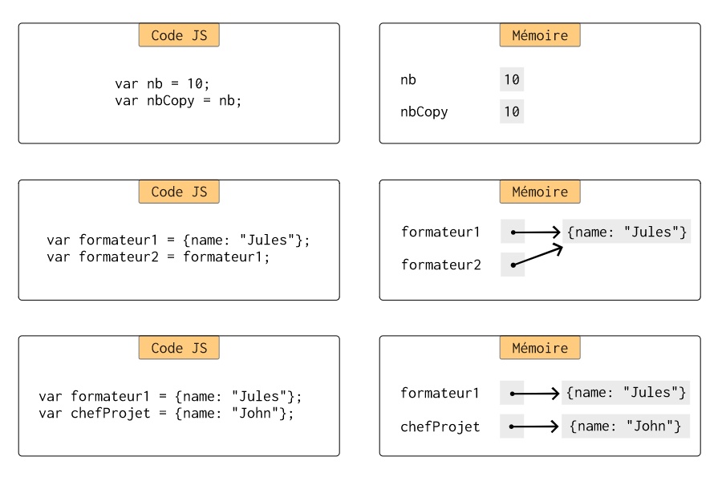
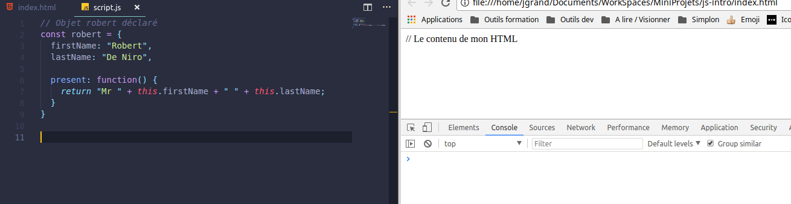

Soyons dynamiques avec JS
C'est quoi JavaScript ?
A votre avis ?
Un langage de programmation
Un langage interprété (et compilé)
Un des langages les plus célèbres aujourd'hui
Que permet-il de faire ?
De manipuler des pages HTML
Et bien plus encore... (cf NodeJS)
Comment profiter pleinement de ce cours ?
En refaisant les exemples du cours en même temps !
- Créez un fichier index.html
- Créez un fichier script.js
- Appelez le fichier script.js dans le fichier index.html
Le langage
Un langage de programmation dynamique ...
JavaScript est interprété.
Vous ne compilez pas votre code pour le rendre exécutable.
... orienté prototype
Les objets se construisent à la volée.
Il n'y a pas besoin de classes comme en Java.
Les différents types de variables
Les types primitifs
- Boolean : true or false
- Number : 1 or 4.5 or 6e34
- String : "Hello"
- undefined : la valeur initiale d'une variable
- null : la valeur nulle d'une variable
Les différents types de variables
Les objets
// Déclaration de mon premier objet
var formateur = {
name: "Jules",
role: "Formateur"
};
Attention : pas de mots clés sans " (ex: delete)
Comment déclarer ses variables ?
// Déclare une variable de scope fonction si dans une fonction
// Global sinon
var formateur1 = "Jules";
// Déclare une variable de bloc
let formateur2 = "Bernard";
// Déclare une constante
const chefProjet = "Hanifa";
La bonne pratique est toujours de faire du plus strict au moins strict
const > let > var
Rappel : valeurs vs références
L'égalité faible vs stricte
2 façons de tester l'égalité
== vs ===
1 == 1 // true
"1" == 1 // true
1 === 1 // true
"1" === 1 // false
C'est la même chose pour l'inégalité
Les fonctions
Les fonctions sont des objets !
// Je crée une fonction que je stocke dans une variable
const sayHello = function () {
console.log("Hello there!");
}
// J'appelle ma fonction en utilisant le nom de ma variable
// Suivi de parenthèses
sayHello();
Vous allez rencontrer des fonctions fléchées
N'ayez pas peur !
// La même chose qu'avant mais en fléché
const sayBonjour = () => console.log("Bonjour toi!");
sayBonjour();
On peut définir des fonctions dans des fonctions !
Oui, oui c'est Inception !

Une fonction dans une fonction
function sayHello(string) {
const hello = string;
return function(name) {
return hello + " " + name;
}
}
// J'exécute directement les deux fonctions
console.log(sayHello("Bonjour")("Jules"));
Les objets
Exemple basique
// Je déclare un objet robert
const robert = {
firstName: "Robert",
lastName: "De Niro",
// Present function
present: function() {
return "Mr " + this.firstName + " " + this.lastName;
}
}
Les prototypes
Tous les objets ont un prototype
Le prototype est l'équivalent de la classe Java
On range souvent les fonctions d'un objet dans son prototype
Utilisation du prototype
// Je déclare un objet george
const george = {
firstName: "George",
lastName: "Clooney"
}
// J'ajoute au prototype de george une fonction present
george.__proto__.present = function() {
return "Mr " + this.firstName + " " + this.lastName;
};
console.log(george.present());
Essayez dans le navigateur :
Utiliser un prototype comme modèle
const leonardo = Object.create(george);
leonardo.firstName = "Leonardo";
leonardo.lastName = "Di Caprio";
console.log(leonardo.present());
Plus d'informations
En complément pour les bases :
Un cours pour débutants sur OC
Pour en savoir plus sur les scopes, le hoisting, ...
L'interactivité des pages Web
Le DOM
Document Object Model
Représentation objet d'un page HTML
L'objet document pour
- Créer des nouveaux éléments
- Retrouver un élément grâce à son identifiant
- Retrouver un élément grâce à son identification CSS
- Et bien d'autres choses encore ...
Exemple (1/2)
Mon fichier HTML
<body>
<h1>Gestion des apprenants Simplon</h1>
<div id="contenu">
<p class="lien">Ceci est un paragraphe où il y aura des liens.</p>
</div>
<script src="script.js"></script>
</body>
Exemple (2/2)
Mon fichier JS
// Je crée un nouveau contenu
const newParagraph = document.createElement("p");
// Je récupère l'élément dont l'ID est contenu
const contenu = document.getElementById("contenu");
// Je récupère le premier élément HTML qui correspond au sélecteur CSS p.lien
const pLien = document.querySelector("p.lien");
Ajouter ou modifier du contenu
- parent.insertBefore(newChild, refChild)
- parent.appendChild(newChild)
- parent.removeChild(oldChild)
- parent.replaceChild(newChild, oldChild)
Exemple
// Récupération du paragraphe p avec class lien
const pLien = document.querySelector("p.lien");
const newLink = document.createElement("a"); // Création du lien
newLink.href = "http://simplon.co"; // Remplissage de l'url du lien
newLink.textContent = "Simplon"; // Remplissage du titre du lien
newLink.style.color = "rgb(206, 15, 15)"; // Lien en rouge
newLink.style.textDecoration = "none"; // Texte non souligné
pLien.appendChild(newLink); // Ajout de la balise a au paragraphe
Les évènements
Quand appeler le code vu juste avant ?
Lorsqu'un évènement se produit !
Lors d'une action utilisateur par exemple
Comment déclencher une fonction sur une action utilisateur ?
Les EventListeners
// Si l'utilisateur.trice clique sur mon lien
// alors je lui demande s'il.elle est sûr.e de vouloir partir
const simplonLink = document.getElementById("simplon-link");
simplonLink.addEventListener("click", function(event) {
const conf = confirm("Are you sure that you want to leave? :'(");
// S'il.elle n'est pas sûr.e, j'annule la navigation vers le lien
if (!conf) {
event.preventDefault();
}
});
Plus d'informations
En complément pour les bases :
Un cours pour débutants sur OC